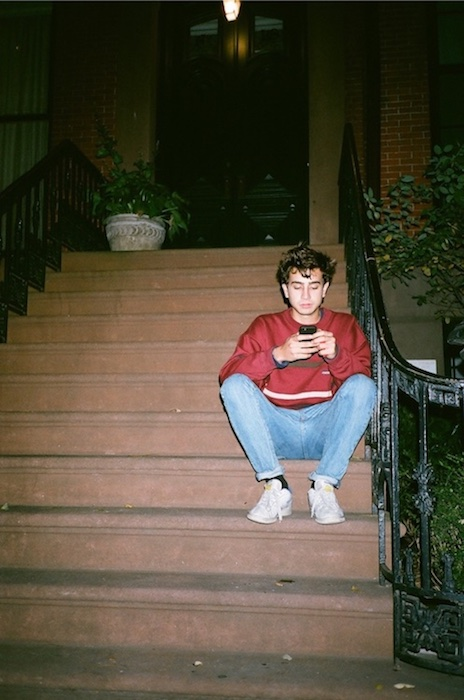
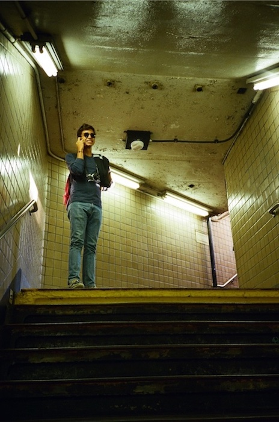

A little bit about myself:

I like the person I am becoming; I’m just not there yet. I’m not even sure where “there” is. What I know is that my journey to adulthood will be full of challenges that, although they scare me, will make me better. My first year of high school was where my transition to adulthood began. To understand that year, I have to first explain my childhood.
My upbringing was far from ordinary. I was born in Lima, Peru, into a Spanish family, and when I was only two-years-old I moved to New York due to my dad’s profession. During those years, my family had the opportunity to experience the American lifestyle and culture while also becoming fluent in English. When I turned seven, we were relocated to Madrid, where my family is originally from. Living in Spain has been a thrilling experience. However, a year later my parents’ marriage fell apart creating an uncomfortable set of circumstances. My world was rocked and I was left with an unexplainable feeling, much the same way you can’t explain color to a blind person. The separation left me confused and unstable.
Like most of my classmates in middle school, I seemed to move from one group of friends to another, trying to find my place. The American School of Madrid enrolls students from over fifty different countries. Therefore I was able to interact with people from a wide array of cultures, which helped me to contrast the different ways each of us interpret facts, emotions, and ideologies.
When I started my first year of high school I decided it was time to make a change and to figure out who I was. I had not been a particularly stellar student and I was weary of disappointing others and myself. I was determined to improve my grades, but the changes I was seeking went beyond grades. Then one day a classmate suggested I run for class president against the most popular girl in the ninth grade. Terrifying. I will never know where I got the courage to run against her, but something pushed me out of my comfort zone. By working hard and communicating clear ideas for the class, I won, taking the first step into young adulthood.
My commitment to the freshman class as President was demanding and should have been my biggest challenge of the year- yet something else was. While I was skateboarding in February of that year, I fell and severely broke my knee. The accident flipped my world upside down. Between two surgeries and innumerable sessions of rehabilitation, I disconnected from most friends, and was lost once again. During the recovery process, I was able to reflect on the challenges of that year. I grasped the significance of having quality friendships. I discovered the importance of being surrounded by quality people. And this is one lesson I will carry with me into college. I also discovered that life challenges shouldn’t be approached as an impediment but rather as an opportunity to succeed and grow. I realized that once I could overcome the fear of risk-taking and understand that the real opponent is the one in our heads, I could develop my own voice and become the person I wanted to be.
Throughout my high school years, my grades and my overall bliss improved each year. I joined the photography club and won second place in a school-wide photography contest. Taking IB courses such as Theory of Knowledge has also helped me to excel in writing and critical thinking. As a result of my success in these courses and passion for photography, I hoped to become a journalist. Since then, I have taken on all challenges head on, with the same conviction that allowed me to succeed in high school, which is why I am now where I wanted to be: a fascinating institution, filled with students and professors coming from diverse cultures, studying my dream profession, in a beautiful campus, in the heart of Manhattan, NYC. However, I did not realize that this was something I sought for, until my freshman year of college.

I completed my first year of university at Loyola University of Chicago’s John Felice Rome campus. This tends to be a semester-long abroad program for upperclassmen studying at Loyola’s Chicago campus. Yet, I was given the option, along with 30 other students, to do a full-freshman-year in Rome. I couldn’t turn down this option, since I would still be studying at an American institution (what I most wanted), but at the same time: I could stay in Europe, closer to my mother, siblings, grandparents, and friends. Nonetheless, though I now reminiscent of my time spent in Rome, I did not appreciate Loyola as a university, nor my peers. The city was, indeed, eternal, beautiful, and like no other. But my peers within the university lacked diversity, were fairly closed-minded, and widely immature (since the main reason they go abroad is to simply drink their lives away before they turn 21), and I realized that I needed to be at an institution where I could relate more to my peers, as well as enjoy my courses to a higher extent: which is why I found myself within a new challenge.
I knew I would miss Rome and the big city life, which narrowed my list of potential transfer options. Yet, The New School was on that list since day one. I knew it was an institution filled with diversity, understanding, a variety of cultures, religions, viewpoints, in the Greenwich Village, and happened to offer my major (incorporating design). And here I am now: living the life I chose to live, establishing quality friendships every day, learning like never before, starting my career as a Journalist, slowly becoming the person I wish to be, and ready for all further challenges. I couldn’t have asked for anything else, except maybe being closer to my mother and siblings, which I simply see now as another challenge. Nonetheless, having my father and grandfather within the US surely makes up for that. I can honestly say that I am satisfied with my choice, but above all, I am happy.